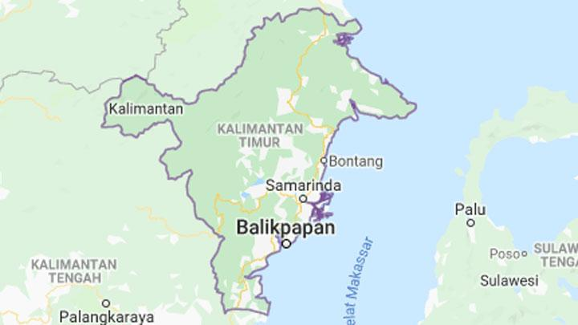

Kalimantan Timur
Kalimantan Timur atau Kaltim merupakan sebuah provinsi di Pulau Kalimantan yang terletak di ujung timur yang berbatasan dengan Malaysia. Kalimantan Timur merupakan daerah dengan jumlah penduduk terendah keempat di Indonesia. Di Kaltim, terdapat destinasi wisata yang kualitasnya dapat disandingkan dengan destinasi wisata milik luar negeri.